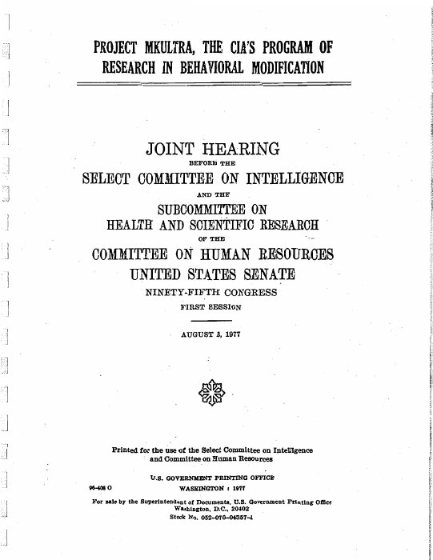
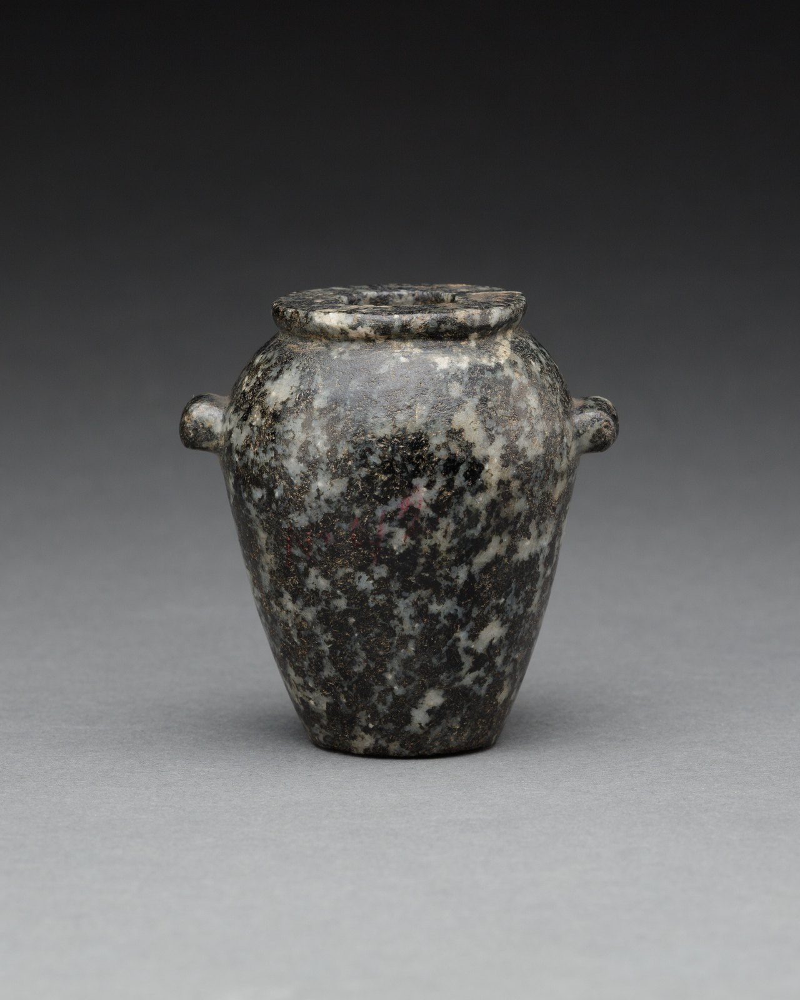

THE TRUTH
WAS STRANGER.
Some stories sound impossible.
Then you find the paper trail.

They drugged people who never agreed to an experiment.
Project MKULTRA. The CIA’s covert experiments on human behaviour.
Secrets leave
evidence.
Covert experiments. Manufactured narratives. Carefully concealed truths. These files begin with the startling claim and end with the original record.
EXTRAORDINARY CLAIMS. TRACEABLE SOURCES.Mind control was
a programme.
The experiments were real. What they achieved is a different question. Inside MKULTRA, the CIA’s secret investigation into drugs and human behaviour.
Before the record,
there was stone.
Lost cities. Ingenious objects. Spaces still hidden in the stone.
The ancient world still has questions worth asking.

Photograph cropped for display.
Hard stone.
Extraordinary
hands.
Beautifully shaped vessels. Narrow necks. Stone that resists the tool. The craftsmanship is remarkable; the way we investigate it should be just as precise.
What can the surviving objects, workshop traces and experimental reconstructions actually tell us?
The surviving questions.
DISCOVERY / EVIDENCE / UNCERTAINTYStill looking.
Still asking.
A public inquiry. A contested experiment. A journey across ancient Britain. These are questions with evidence behind them, and conclusions still to be earned.
Open the current collection ↗Unidentified.
Still worth looking.
Original military footage. The British archive. Cases that remain open, and explanations that changed the story. Explore regional pins on an interactive globe and open the record behind each observation.
Explore the UFO observation room ↗Closer to home.
Stranger than fiction.
From Porton Down to the Post Office. From buried coastlines to Stonehenge. Follow the English record and the wider British story.
EXPLORE ENGLAND ↗SIX READING TRAILSPick a thread.
See where it leads.
Ancient Egypt. Institutional silence. Hidden surveillance. A route through the archive for the question that stays with you.
FOLLOW A TRAIL ↗THE SIGNAL ROOM / OPEN BOARDLeave a thought.
Follow a conversation.
Choose a name, bring a question, share a source. A public message board for people who keep looking.
ENTER THE SIGNAL ROOM ↗THE COMPLETE INDEXYour next file.
Your own trail.
Search every subject and place. Save the files you want to return to in this browser, then follow their original sources.
SEARCH & SAVED FILES ↗Curiosity deserves
a better record.
History contains things that sound invented. It also contains stories that became bigger than their evidence. This archive is interested in the space between the two.
Each file separates what is established from what remains uncertain. A real secret programme does not prove every claim made about it. An unexplained detail is an invitation to investigate.
How to read the files ↗